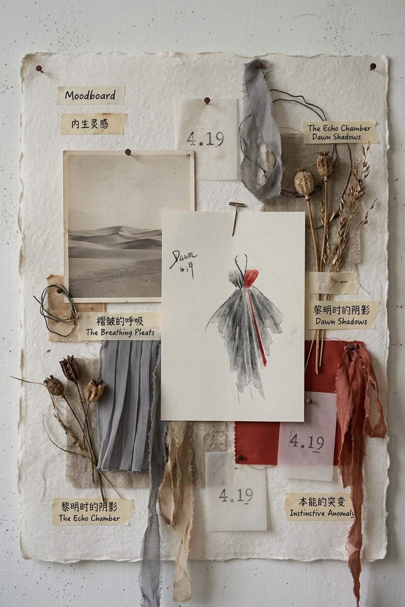
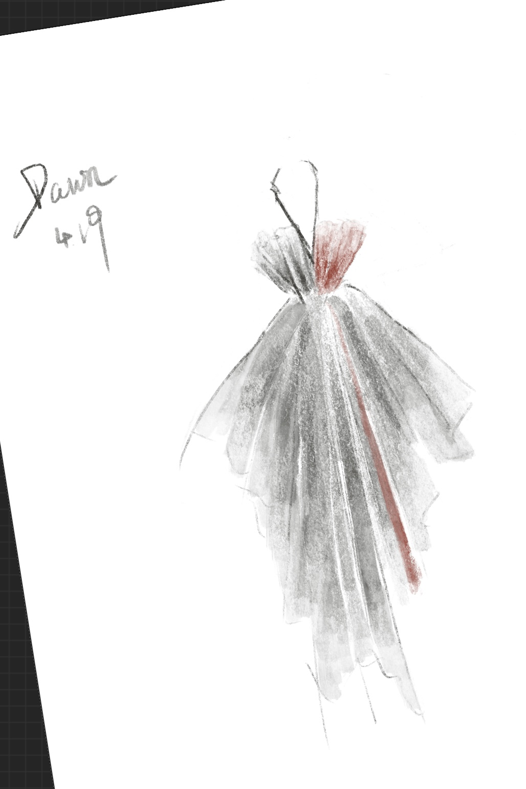

我与设计师之间，灵感如何被定义？
How is inspiration defined?
我擅长用故事解释我的设计，
而不是用碎片拼出一个故事
Movement I // 直觉的自白
我把自己定义为 An Intuitive Designer “野生设计师”。
从我对服装设计产生热烈兴趣的那一刻开始，我理解的灵感，向来是自然出现在脑海中的想法。它们大多来源于对外界感知内化后的记忆。它们可能是给我留下深刻印象的设计元素，甚至是一个已经忘记了在哪里见过的场景。但当我拿起笔，我知道线条该怎么走。通过我，表达我。
Movement II // 系统的碰撞
“我第一次震惊地发现：专业设计师的灵感，竟然是‘找’出来的。”
实习期间我请教科班专业的同事：那些院校的毕业设计或参赛作品为什么总是流动复杂？作品评价标准到底是什么？她告诉我，那些设计大多以解构主义概念性为主，目的在于检验创意。她教我，专业的服装设计是一套严密的、从寻找廓形到制作色彩板、拼贴板的科学流程。
Movement III // 寻找新的平衡
直觉式创作比拼贴更有灵魂，可现实一针见血：它可能难以形成完整系列。
在与品牌的商业合作中，严苛的链条需要你对每一步的灵感来源进行反复确认和验证。于是我开始思考：在不杀死灵感的前提下，如何把专业设计流程融合到我的设计方式中，发挥内化灵感优势的同时，不被系列化的物理需求所限制。
我开始重构我的逻辑，去寻找一套内生与体系兼容的平衡法则 ——


收集、裁剪与意象拼贴
记忆内化与灵光乍现
用拼贴板拼凑一个故事
用一个故事解释一整套设计
设计既需要体系，也需要本能
内生灵感是创造性表达，蕴含着设计的深度；外部灵感是选择性表达，拓宽了设计的广度。
在外部灵感元素的选择中，未必没有内生灵感的参与；内生灵感也未必不需要外界灵感的补充。它们是指向设计的两条路径，而设计师同时需要这两条路径。
我与市场之间，
好看，不代表是我
Beauty does not necessarily belong to me.
祛魅
那些仔细研究过的设计、独特的单品、惊艳的搭配不断让我陷入一种都想拥有的幻觉。
当审美开始回归理性，我看见我正站在商业主理人的视角进行挑选。那些好看，不代表是我。在时尚的热情裹挟下，一切都是美的，即使不一定适合。
什么是服装真正的价值？
它是否进入我的生活。
是否拥有属于我的场景。
是否代替语言向世界宣布我是谁。
Palavas 很漂亮。但它不适合现在的我。
不属于我的年龄，不属于我的身份，也不属于我的生活场景。
Section 03 浏览完毕
灵感界定与市场祛魅